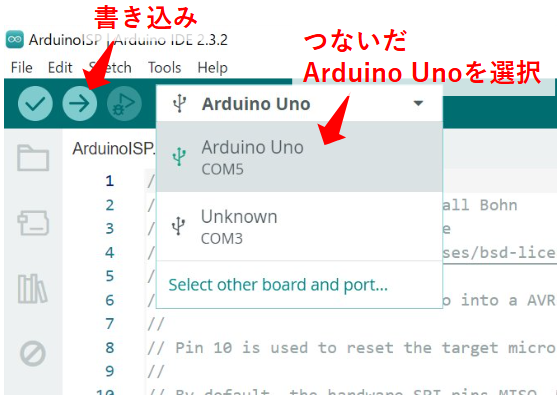

2024/6/13
小型マイコンATtiny85をArduino化して使ってみた
はじめに
秋月電子などでお安く手に入る小型マイコン、ATtiny85にArduinoを書き込みしてみました。
回路接続、プログラム書き込みまで紹介しています。
プログラム書き込みはArduino Unoを使用します。
メモリ少ないのが難点ですが、ちょっとした機能のものを作りたいときなどは選択肢に入れてみてください。
AVRマイコン ATTINY85-20PU: 半導体 秋月電子通商-電子部品・ネット通販
AVRマイコン ATTINY85-20PU
送料気になる方はamazonでも売っています。
準備 Arduino Unoをライター化する
Arduino UnoにISPプログラムを書き込んで、ATtiny85にプログラムを書き込めるようにします。
まず、以下からArduino IDEをダウンロード、インストールします。
Software | Arduino
Open-source electronic prototyping platform enabling users to create interactive electronic objects.
PCとArduino Unoを接続してIDEを起動します。
左上メニューの「file」→「Examples」→「11.ArduinoISP」→「ArduinoISP」を選択します。
プログラムが開いたら、Select Boardで「Arduino Uno」を選択し、書き込みボタンを押します。

これで、Arduino Unoをライターとして使用することができます。
Attiny85端子情報
リセット(1pin)、GND(4pin)、電源(8pin)を除くと、IOとして使えるのは残りの5ピンです。
ソフトウェア作成
ソフトウェアはArduinoで作成します。
環境は、VSCode＋PlatformIOがおすすめです。
インストール方法は以下です。
PlatformIO IDE
A new generation toolset for embedded C/C++ development
インストールしたら、New ProjectでATtiny85のプロジェクトを作成します。
プロジェクト内の「src」フォルダ直下に「main.cpp」ファイルがあるので、ここにプログラムを書きます。
外部のライブラリを使用するときは、「lib」フォルダに入れれば使用できます。
ソフト書き込み
platformioのiniファイルを修正する
プロジェクト内にあるplatformio.iniファイルの中身を、以下のように書き換えます。
Arduino Uno経由でソフトを書き換えるための設定です。
（こちらの公式ページより抜粋）
[env:program_via_ArduinoISP]
platform = atmelavr
framework = arduino
upload_protocol = custom
upload_port = SERIAL_PORT_HERE ;使うシリアルポートを入れる ex)COM3
upload_speed = 19200
upload_flags =
-C
${platformio.packages_dir}/tool-avrdude/avrdude.conf
-p
$BOARD_MCU
-P
$UPLOAD_PORT
-b
$UPLOAD_SPEED
-c
stk500v1
upload_command = avrdude $UPLOAD_FLAGS -U flash:w:$SOURCE:i
Arduino UnoとAttiny85を接続する
Arduino UnoとAttiny85を以下のように接続します。
（こちらの公式ページより抜粋）
| Arduino | attiny85 | 機能 |
|---|---|---|
| 10 or ICSP-5 | 1(PB5) | Reset |
| GND or ICSP-6 | 4(GND) | GND |
| 11 or ICSP-4 | 5(PB0) | MOSI |
| 12 or ICSP-1 | 6(PB1) | MISO |
| 13 or ICSP-3 | 7(PB2) | SCK |
| 5V or ICSP-2 | 8(Vcc) | Vcc |
Arduino Unoの各ピンの場所は以下です。
接続したら、左下の右矢印マークで書き込みをします。
DONEのメッセージがでたら、書き込み完了です。
以上です。